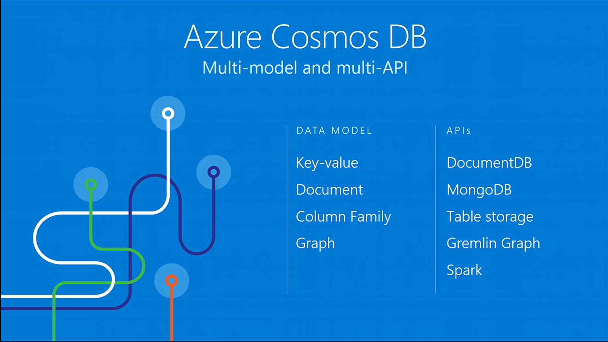
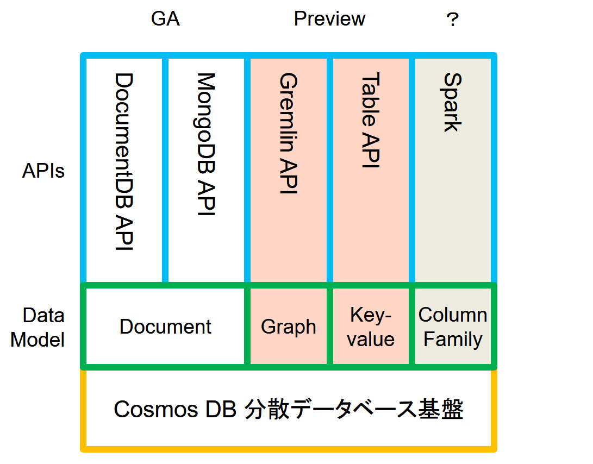
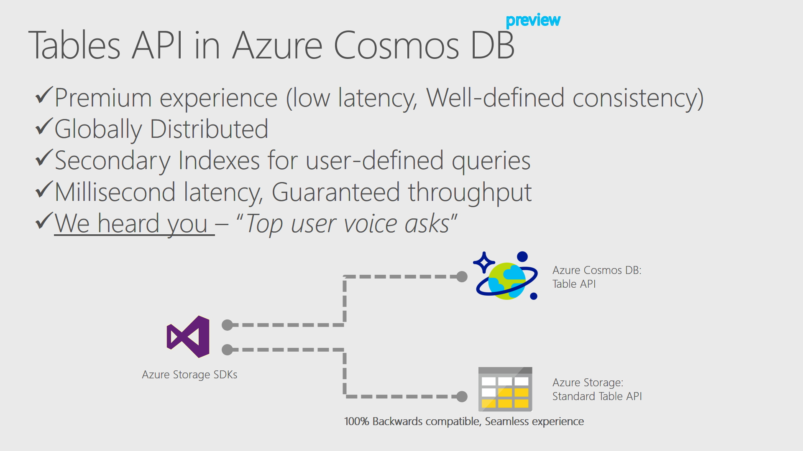

Azure Cosmos DB がやってきた
DocumentDB の記事を書いていたら、//Build 2017で、Azure Cosmos DB が発表[1]された。 Cosmos DBは、Multi-model database and multi-APIのGlobally Distributed データベース・サービスだ！
「DocumentDB何処行った、名前が変わったの？」と思ったら、そんなに簡単な話では無かった、Azure Cosmos DBは、DocumentDB、MongoDB, Azure Table,Gremlin などの複数のAPIをサポートしたマルチモデルの分散データベース[#ref2]_で Document DBはそのAPIの一つという位置づけになったらしい。従来の Document DBで使ってた分散データベース基盤の部分は、ある程度汎用的に出来ていてJSON以外のデータモデルも扱え、今回はKey-Value と GraphのデータモデルにAPIを付けてブランディングも新たにお披露目したよという話だった。素晴らしい。
ざっくりまとめると、こんな感じになってる。Cosmos 分散データベース基盤に、データモデルが乗って、個々にAPIを提供するといった感じだ。AzureTable, Gremlin は、Previewで既に試すことができるが、Splark は、アナウンスだけ、DocumentDBとMongoDB APIはGAのままだ。この２つがGAのままなのは、Cosmos DBになっても基本的な実装は同じだからだろう。
Breakout Session
//Build 2017のCosmos DBの2つのBreakout Session、B8047[3]と、T6058[4]では、もう少し詳細に触れられている。その中でも興味深いのは、B8047 のTable APIの下りだ（動画だと35:50あたり[5]）。 超訳すると。
Cosmos DB に、既存のTable Storage（以下Standard Storage)互換のTable API（以下Premium Table）を実装した。もう、Premium Table SDK[6]をダウンロードして試せる。アプリケーションの変更は必要ない（SDKでを切り替えるだけ）で、ローレイテンシー、5つの一貫性、グローバルディストリビューション、セカンダリーインデックス等、数々のCosmos DBの特性が得られる。
特に重要なのは、これに続く部分だ。
現在「storage optimized offer」に向けて作業中、現在の Cosmos DB は、スループットの最適化、ローレイテンシーなどのpremium experience にフォーカスしているが、hot work load 以外の場合でも選択肢にできるように取り組んでいる。
現在のCosmos DB（旧DocumentDB）の料金体系は、基本hot work load向けだ。アクセス頻度が低いデータが多くなってくるとAzure Storageとのコスト差がどんどん大きくなっていく。データ全体の中で一部だけのアクセス頻度が高く、殆どのデータはアクセス頻度が低い場合は、Cosmos DBだけでなく、なんからの外部データストアとの連繫を検討する必要がある。これは特に、Standard Table（これからは、Azure Table StorageのことはStandard Tableと呼ぼう）からの移行を考えた時に重要な検討課題だろう。それがうまく解決できるなら、かなり有り難い。
同時に公開されたBlogから
Cosmos DBも発表共に公開されたBlogもなかなか面白い。Azure Cosmos DB: The industry’s first globally-distributed, multi-model database service[7]の A Brief History of Cosmosには簡単なCosmos DBの歴史が書いてあった。それによると、
Azure Cosmos DBは、2010年に「Project Florence」で開始、グローバルディストリビューションの課題を解決するためにMSの社内で使っていたが、他の皆にも役に立つと思って、2015年にAzure DocumentDBの形でこのテクノロジの第1世代を利用できるようにした。
云々だそうだ。世界中で展開するサービスの下りをみて連想したのは、AzurePortal。「最近ポータルが速くなってきてるのはエンドポイントを日本に持ってきたからかな、でもUSのリソースも普通に操作できるしどうなっているのだろう」と思っていたが。こんな仕組みがあれば実装イメージが湧いてくる。実際のところはどうなっているかはわからないが。なかなか興味深い。
あとA technical overview of Azure Cosmos DB[8]に、LeslieLamport 博士が出てきて、Cosmos DBの一貫性の設計、実装にTLA+[9]のCosmosでの活用の話をしていたのが興味深かった。正しく動く分散システムを作るのはなかなか難しい、そんな中で形式手法が有効だ。Cosmos DBは設計、実装で、TLA+が複数の一貫性のサポートやSLAの提供に貢献した（超訳過ぎるので原文参照）。AWSでは、2011年からFormal Methodsを使って、重要な分散システムのアルゴリズム設計を行っている[10]と話題になったが、MSが分散システムの設計に使っている公言したのは初めてな気がする。利用者サイドからの一貫性の検証は難しいので設計、実装の取り組みがわかるのは有り難い。
この記事には、Azure Cosmos DBのデータベースエンジンの中身についても少し書いてあった。以下超訳
Azure Cosmos DBのデータベースエンジンのコアタイプシステムは、汎用的にどのようなデータにも対応するatom-record-sequence (ARS)と呼ばれる構造となっている。Atomは、文字列、論理型、数値などのprimitive型、recordは構造体、sequence はatom、record、sequenceの配列である。また、Azure Cosmos DBのデータベースエンジンは、JSONなどのAPIが利用するデータモデルとARSベースのコアデータモデルの効率的な変換と投影を実装し、動的型付き言語（dynamically typed programming languages）からコアデータモデルへのネイティブアクセスをサポートする。このデータベースエンジンを使うことで、Cosmos DBのAPIは、battle-tested でフルマネージドな、グローバル分散型データベースシステムのすべての利点を得ることができる。
ARSは、プリミティブ型を単純に並べただけの構造なのでJSONをそのまま保存するよりは効率は良いだろうし、別のデータモデルを実装し易いだろう。このような構成で、データベースとしての基本的な部分、整合性、リプリケーション、バックアップなどは共通の仕組みが使えるというわけだ。
まとめ
つらつらと書いていたら随分長くなってしまった。これで、Graph APIの話とかTLA＋の話も書きたかったが疲れたので、この辺で一旦終わる。最初、Premium Tableを聞いた時は、DocumentDB時代の価格体系だとちょと用途が限定される気がして、どうなのかとも思ったが、B8047[5]の話を聞いて、今はとても期待している。
今の気分は、「Cosmos DBはいいぞ」と言う感じだ。
脚注
| [1] | [1:22:26]Azure Cosmos DB Introduction |
| [2] | [1:27:20]Rimma Nehme, Azure Cosmos DB demonstration |
| [3] | B8047 How to build globally-distributed, fast, billion-user applications with Azure Cosmos DB |
| [4] | T6058 Azure Cosmos DB: NoSQL capabilities everyone should know about |
| [5] | (1, 2) [0:35:50]B8047 のTable APIの部分 |
| [6] | Premium Table SDKソースは未公開 |
| [7] | Azure Cosmos DB: The industry’s first globally-distributed, multi-model database service |
| [8] | A technical overview of Azure Cosmos DB |
| [9] | Foundations of Azure Cosmos DB with Dr. Leslie Lamport, longレスリー ランポート先生のインタビュー、お勧めです。 |
| [10] | How Amazon Web Services Uses Formal Methods |
| [11] | Getting started with Azure Cosmos DB: Table API |
| [12] | 接続文字列の切替部分 |
| [13] | AppSettingsでの設定箇所 |
その他の参考リンク
PsEnv への TabExpansion の実装
git-poshのコードを見ていたら、PowerShell 3.0 から導入された TabExtentionを使ってタブ補完を実装していた。[1]仕組みはシンプルで便利な機能だったので、いつも使っているPsEnv[2]に実装してみた。[3]簡単なコードだが知らないテクニックが使われていて面白かったので軽く紹介。

TabExtentionの基本
「コマンドラインで、タブを押したときに Function:TabExtention が呼ばれ、コマンドラインと最後のワードが渡される、TabExtention の関数で文字列の配列を返すとコマンドラインでは補完文字列として扱われる」
基本、これだけなので、非常にシンプルでわかり易い。[4]git-poshのコードを見ながら実装してみたら、こんな感じになった。
コード解説
L33で現在のTabExpansionの関数をリネームして保存しておく、補完処理が自分と関係無い場合は、このコードにフォールバックする。（関数名を変更できるのは知らなかった）コールバックチェーンの実装方法の一つらしい。TabExpansion は、Globalな名前空間にExportされてるが、TabExpansionBackup はExportされておらず、名前が衝突する心配は無い。タブが押されると、L37 TabExpansion関数が呼ばれる。正規表現で引っ掛けて、補完処理対象のコマンドラインならPsEnvTabExpansionへ、その他はTabExpansionBackupへフォールバックする。
L19 PsEnvTabExpansionは、コマンドラインのラストブロックを貰って、正規表現で引っ掛けて対象の補完文字列を返す。switch と正規表現を使うとスッキリ書けて気持ちいい。
DynamicParamとの比較
TabExtention では、仕組みがコマンドライン文字列のパターンマッチングなので PowerShell Cmdlet 以外のWin32 EXE などの補完も実装できる。PsEnvはCmdletなので、DynamicParamでも良かったかなという気もするが、実装を比べると.NETのクラス出まくりのDynamicParamに比べTabExtentionは綺麗に書ける。しかし、TabExpansion はGlobalなキー入力をフックするので下手に作るとキー入力のレスポンスが悪くなるという欠点がある。どっちも、デバックし辛いのは欠点。
PsEvnの紹介
あまり知られていない気がするので、PsEnvの紹介を簡単に書いておく。Windowsでは環境変数の取り合いになって、うまく共存できない環境がママある。linuxや、Macだと、rubyや、pythonの仮想的に切り替える仕組みだけで足りたりするのだが、Windowsだと駄目だったり。cygwin, msys さらにそのバージョン違いでコンパイルされていたりして混ざって動かなくなったりすることがある。そのため、標準の環境変数はなるべくクリーンにしておいて環境によって必要な環境変数を設定するようにしている。PsEnvは環境変数を設定するのに便利なCmdletだ。
使い方は、PsEnvを見てもらうとして、使ってる設定ファイルpsenv.jsonを参考までに上げておく。ゴミが多くて少々長い申し訳無い。
最後に
これを書いている途中で、TabExtention++ が、PSReadlineと同時に WMF5の標準機能として取り込まれている[5]のを知った。共存しても問題無いのだろうか。このあたり[6]には、PowerTab（？）対応のコードが入ってるので余計気になる。
参考
| [1] | posh-git/src/GitTabExpansion.ps1 |
| [2] | PsEnv A simple PowerShell module that allows specific tools to be added to the current environment by updating environment variables from a JSON file. |
| [3] | Tab completion support of Use and Use-Tool options. |
| [4] | 公式ドキュメントが見つけられないかった。参考Document TabExpansion and ArgumentCompleter #747これかな？The new TabExpansion feature… |
| [5] | 第6回 PowerShell 勉強会「PowerShell 5.0 新機能と関連OSSのご紹介」資料公開 |
| [6] | PowerTab対策コード |
Azure Managed Disk が GA
PowerShellが出ないので、とりあえず ARM Template を使った Managed Disk の操作方法を書く。
そもそも、Managed Diskとは何かという話は、Azure の Managed Disk のまとめに書いてあるので、そっちをどうぞ。
ざっくりと言うと、今ままでは Storage Account を作成して、Page Blobを置いて仮想ディスクとしてマウントするというのがAzureのブロックデバイスの扱いだったが、Managed Disk では Storage Account を意識することなくブロックデバイス（仮想ディスク）をリソースとして使えるようになりましたという話。
これでまた一つ普通になりましたという話で、Storage Accountとか、Page Blobとかを Azure 側で管理してくれる仕組みなので、Managed Disk（＝良さ気に管理されたディスク）と呼ばれている。従来のものは、ドキュメント上は Unmanaged Disk と呼ばれているようだ。いつものように、名前がベタすぎてかえってわかりづらい。

改善点
いろいろあるのが、特に注目すべき改善点をいくつか上げる
- 仮想マシンのディスクリソースの定義の簡易化
- スナップショットの取得、仮想イメージの作成の容易性
- Storage Account の制限を意識する必要が無く。パフォーマンス設計が簡略化
- Storage Account KeyとPage BlobとしてのEndpointが無くなり運用設計が簡略化された
今回は、仮想マシンのリソース定義がどれぐらい簡略化されたのか、スナップショット関連はどうかを見てみる
概要
従来の仮想マシンのリソース定義では、下記のように書いてた。storageProfileのimageReferenceには、元になるイメージの情報が、osDiskにはイメージから仮想ディスクを作成する旨とPage BlobのURLが定義される。storageProfileだけを引用するとこんな感じだ。
このテンプレートでは、Page Blob を置くストレージアカウントを定義して使っている。
Managed Disk では、StorageProfile の osDisk の部分を省略でき下記のようになる。osDisk の部分がざっくりと無くなった感じだ。
このように省略した場合、暗黙のうちに Managed Disk リソースが作成され自動的に名前が付く。インスタンスがS付きの場合はPremium_LRS、それ以外はStandard_LRS、キャッシュはRead/WriteでDiskが作成される。DataDiskの場合はキャッシュのデフォルトはReadOnlyとなる。
※managed disk の場合のdeploy template 全文
省略した場合は、インスタンスのタイプでデフォルトが決まるが、ストレージの種別を指定したい場合、例えば、SでもStandard Storageを使う場合は、osDisk の managedDisk にstorageAccountTypeとして Standard_LRS を指定する。ストレージの定義も無くスッキリ書けるようになった。
Managed DiskはARMリソースになるので、Diskを定義して、仮想マシンにアタッチすることもできる。下記ではDataDiskをDiskリソースとして定義しVMへの接続している。
スナップショットが簡単に取れるようになったので、スナップショットの取得、スナップショットからディスクの作成、仮想マシンの起動をテンプレートを使ってやってみた。
Snapshotを取る
このテンプレートでは、パラメータとしてDiskをもらって、Microsoft.Compute/snapshotsのリソースを作成している。sourceUri の部分にソースとなるDiskのリソースIDを指定してスナップショットを作成するという流れだ。今回何度か実行した感じだと30GBのOsDiskのスナップショットで30秒程度という感じだった。基本仮想マシンを停止して取ることになると思うが、起動中でもスナップショットを取ることはできる。
Snapshot からの Managed Diskの作成
スナップショットの名前とリソースグループ名をパラメータでもらって、Managed Diskを作成する。accountType でStandard、Premiumを指定することができる。これも、ソースとなるリソースは、sourceUri で指定する。これも30秒程度だった。
Managed Diskで仮想マシンを起動
作成したOsDiskを使って、仮想マシンを起動する。これはちょっと長いので一部を引用する。イメージから起動するのと違って、osProfileと、storageProfileのimageReferenceが無い。既にあるDiskリソースをmanagedDiskのidで指定する。
最後に
これで、Azure 仮想マシンのDisk関連はだいぶ変わったことになるが、普通にリソースとしてディスクが使えるようになったので、全体的にはスッキリして分かりやすくなった。未だに、Azure PowerShellのManaged Disk 対応版 (3.5.0)が出てないのが気になるが、ブランチにはrelease-3.5.0居るので、そのうち出てくるでしょう。
ARM template でManaged Diskを操作するなら、https://github.com/chagarw/MDPPを見るのがお勧めだ。ほとんどのパターンが網羅されている。
※ このエントリのためにPRを書いたsupport gist file optionよく見たら同じようなのが2つも既に出ていた orz...
追記 2017/2/10
PowerShellGallery には、3.5 が出ていると教えてもらいました。流石もっともHQに近い男と言われるしばやん。https://www.powershellgallery.com/packages/AzureRM/3.5.0
Managed Disk 対応の Azure PowerShell は Web PI にないだけ
— しばやん (@shibayan) February 10, 2017
Azure DataFactory Tips タイムスライスの再実行
Microsoft Azure Advent Calendar 2016 3日目として書きました。
Azure DataFactory(以下ADF)は、データの移動や変換を自動化するクラウドベースのデータインテグレーションサービスです。 ADFには、コピーアクティビティとデータ変換アクティビティの２種類があります。このうちコピーアクティビティは、単純なETLツールで優れたパフォーマンスとリーズナブルな価格で魅力的なサービスです。個人的にはコピーアクティビティはシンプルでなかなかよく出来ており、お気にいりました。データ変換アクティビティはクラスタを上げて変換処理をするのが利点でもあり難点でもあるって感じですね。
今回は、スクリプトからのエラーリカバリ、タイムスライスの再実行について記述します。ADFでは実行はタイムスライス単位で行われデータソースの問題で複数のタイムスライスが失敗した時などエラーの数が多くなり勝ちです。エラーが多くなるとポータルの画面から再実行をするのはポチポチが多くなってとても面倒になります。そんな時にはということで、Azure PowerShell から、失敗したタイムスライスを再実行してみます。
参照： この記事の基本は概ね、Azure Data Factory のパイプラインの監視と管理に書いてありますので、そちらもどうぞ。
原因究明
まずは、エラーの原因を確認します。エラーが大量に出ていると面倒なので、下記のようなスクリプトでエラーメッセージでサマります。やっていることは、 ログのsort |uniq -cです。
エラーの確認を実行
下記の様に実行すると、DatasetName, ErrorMessage でサマった数が表示されます。下記の例だとエラーメッセージが長過ぎて最後まで見れませんが、コマンド行に、| Out-String -Width 4096[1]を追加すると最後まで表示されます。（幅は随時変更してください）
$ .\adferror1.ps1 -ResourceGroupName "TestADF01" -DataFactoryName "APITutorial" -StartDateTime 2016-08-09T10:00:00 -EndDateTime 2016-08-09T11:00:00
Count DatasetName ErrorMessage
----- ----------- ------------
7 DatasetAzureSqlDestination Copy activity encountered a user error at Sink:tcp:kinmugisql01.database.windows.net,1433 s...
簡単にスクリプトの説明をします。Get-AzureRmDataFactorySlice でエラーになっているタイムスライスを取得して Get-AzureRmDataFactoryRun で、そのタイムスライスの詳細な情報を取得し、最後にエラーメッセージでグルーピングしてカウントしています。
再実行
これでエラーが分かるので問題を修正して、再実行します。
Azure DataFactoryのタイムスライスの再実行には、スライスの状態遷移を理解しなければなりません。そんなに複雑なことは無く、タイムスライスの状態遷移図は下記のようになっており、再実行は、Failed 状態から Waiting に変更することで行います。

問題の修正が完了したら、下記のスクリプトで、失敗したタイムスライスを再実行します、スクリプトでは失敗したタイムスライスを古いものから順にWaitingにするだけです。タイムスライス毎に設定をしているので、pipelineで指定したバックフィルの順序が反映されません。タイムスライス間に依存関係がある場合は問題が出るかもしれませんので注意してください。
実行には、上記で確認したエラーになったデータセットを指定します。再実行になったタイムスライスを表示します。
$ .\\adfrerun.ps1 -ResourceGroupName "TestADF01" -DataFactoryName "APITutorial" -DatasetName "DatasetAzureSqlDestination" -StartDateTime 2016-08-09T10:00:00 -EndDateTime 2016-08-09T11:00:00
DatasetName Start
----------- -----
DatasetAzureSqlDestination 2016/08/09 9:00:00
DatasetAzureSqlDestination 2016/08/09 10:00:00
DatasetAzureSqlDestination 2016/08/09 11:00:00
DatasetAzureSqlDestination 2016/08/09 22:00:00
DatasetAzureSqlDestination 2016/08/09 23:00:00
下記のようなコマンドで、タイムスライスの状態を確認することができます。ここでは、Ready以外を表示しています。
$ Get-AzureRmDataFactorySlice -ResourceGroupName "TestADF01" -DataFactoryName "APITutorial" -DatasetName "DatasetAzureSqlDestination" -StartDateTime 2016-08-09T10:00:00 -EndDateTime 2016-08-09T11:00:00 | ? {$_.State -ne 'Ready'}
最後に
Azure PowerShellを使っていると、PowerShellのオブジェクトパイプランが強力さを肌で感じます。パイプで繋いで、%, ?とやるのが気に入ってしまいました。
今回ちょっと分かり辛らかったのは、 タイムスライスを返すGet-AzureRmDataFactorySliceと タイムスライス の実行結果を返すGet-AzureRmDataFactoryRunの関係でした。最初Get-AzureRmDataFactoryRunがデータセットの実行結果を取得するのかと勘違いしていたこともあり、どのようなパラメータを渡せば良いのかが分からず… このコマンドが、タイムスライスの実行結果を返すもので、タイムスライス（slice）のIDとして開始時間を渡すということに大分時間を無駄にしました。後で、マニュアル[2]見たらちゃんと書いてあったんですが、、、、
Set-AzureRmDataFactorySliceStatusは、期間を渡せるので、個々のタイムスライスを指定するのではなく。期間をわたしてざっくり再実行でも良いかもしれません。その場合は、エラーになったタイムスライスを探して、その周辺の時間帯をざっくり再実行って感じですかね。それはそれで、実用性は高そうな気がしてきました。
締めは、Azure DataFactory はいいぞ！ということで。
脚注
| [1] | poshのデフォルトではコンソール出力はコンソールバッファーの幅で省略されます。この仕様は余計なお世話な気がします。そのまま出してくれれば良いのに。 |
| [2] | Get-AzureRmDataFactoryRun |
.NET Fringe Japan 2016
「まさかの .NET じゃない話」を、.NET Fringe Japan 2016で話してきました。 「Partitionの話とか、なかなか聞けないので面白かったです」 と言っていただけるのは有難いです。
.NET Fringe なのに、.NET 成分、OSS成分ゼロで良いのかとは迷ったのですが、快く背中を押してもらい、Azure Storageの話をすることにしました。
Azure Storageは内部構造が公開されているのにも関わらず、日本ではその構造もあまり議論されることも無く、自分でも中に溜めているだけでなかなか外で話す機会も無いという状況で、。少々もったいない気がしていたので話が出来たのは良い機会でした。
最初は、Storageを構成する３層を全部話そうとしたのですが、細部に立ち入らないと面白い話にならず、細部に入ると話が長くなり全然時間に入らず。結局、一番面白そうなパーテーション周りにフォーカスして話しました。背景的な話や、他のレイヤーの話を飛ばして話したので少々わかり辛らかったかもしれません。
シャーディングをサポートしているシステムは世の中に諸々ありますが、負荷に応じてパーテーションマップを変更しロードバランシングするシステムで上手く動いている例は多くはなく、実装例として面白いのでは無いかと思います。今回は、話の焦点をパーテーションマップを動的に負荷に応じてどう構成するか、そのときに実データの移動を伴わない実装になっているかという当たりが一番盛り上がるところだったのですが、うまく説明するのはなかなか難しく資料の作成に苦心しました。
分割（パーテーショニング）が避けられなった時、一実装例として参考になればと思います。
.NET Fringe Japan 2016 資料です。「Azure Storage Partition Internals」